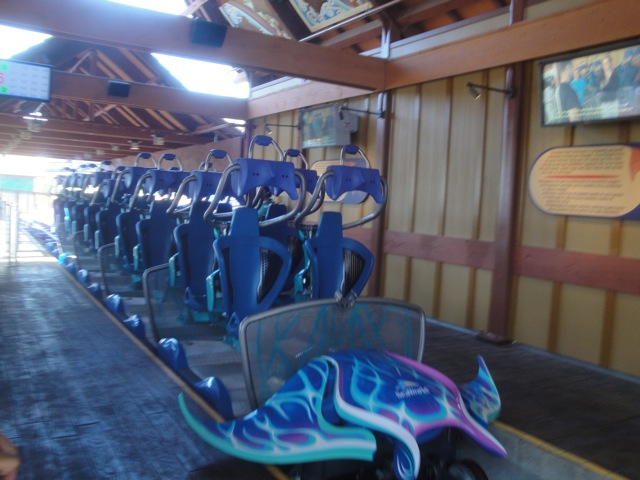
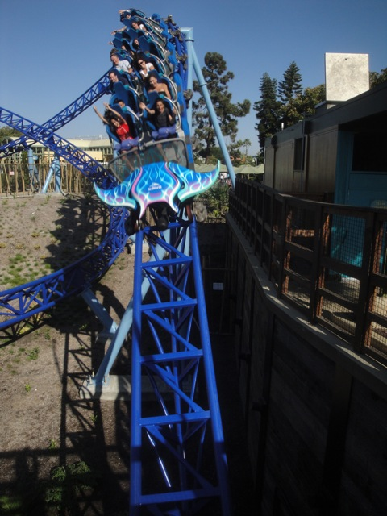
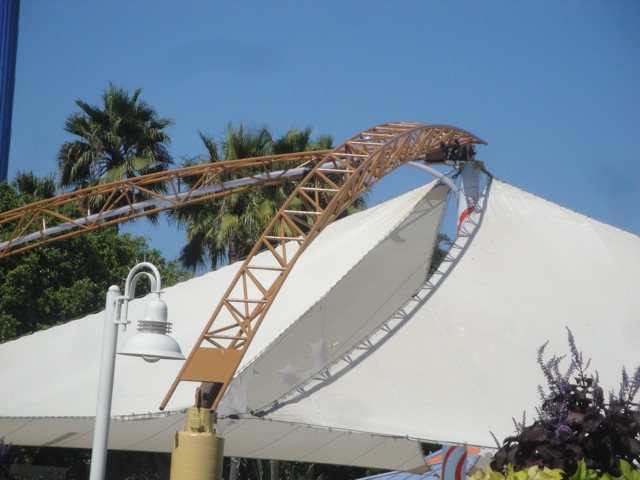
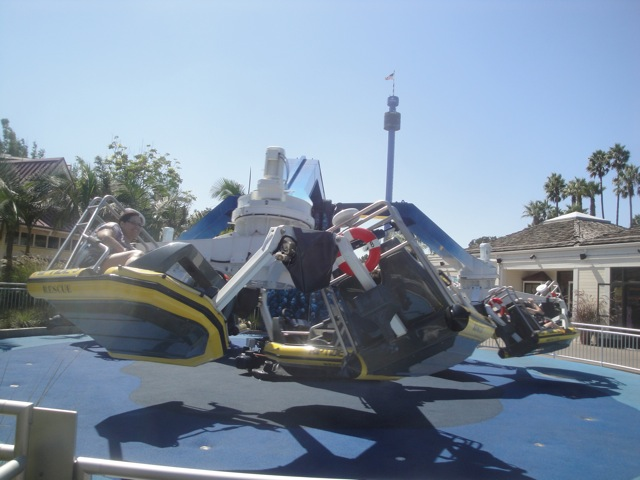
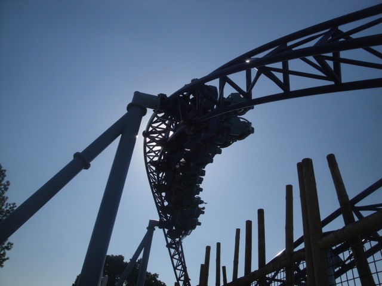
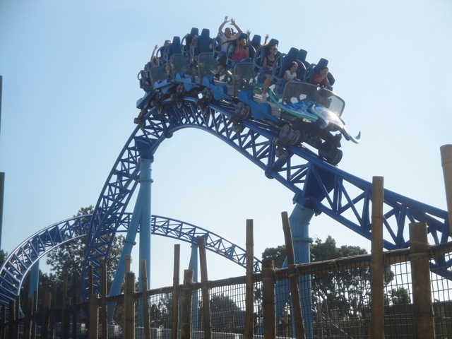

San Diego 2012
All right. Its time for another fun Incrediblecoasters Trip. We decided to head on down to San Diego for many reasons. Mostly the fact that I hadn't been there in almost 5 years and Sea World San Diego got a new credit this year and I really wanted to head down there and try it out. And of course, we had to stop at Randys Doughnuts for breakfast.
BEST DOUGNUTS EVER!!!! NUFF SAID!!!!
 For the millionth time, I'd just like to say once again "F*CK YOU IRVINE COMP!!!!!!!!!"
For the millionth time, I'd just like to say once again "F*CK YOU IRVINE COMP!!!!!!!!!"
Insert Austin Powers joke here.
Since we were making great time and had time to kill before Sea World opened, we decided to stop at Legoland to take some pictures.
 Yeah. This is why we're here.
Yeah. This is why we're here.

All right. So just how was Manta?

Honestly, I must say that I'm impressed. I wasn't expecting much, but this ride delivered good airtime, good launches, good laterals, and a really good theme. Great job Sea World San Diego. Two thumbs up from Incrediblecoasters.
 Between Blue Fire and this, I really want to see Mack build more coasters like this.
Between Blue Fire and this, I really want to see Mack build more coasters like this.
"Hows it going guys. I'm a turtle."
OM NOM NOM NOM NOM!!!!!
 We decided to give Journey to Atlantis a courtesy ride because while its by far from the best water coaster ever, It's still a fun ride.
We decided to give Journey to Atlantis a courtesy ride because while its by far from the best water coaster ever, It's still a fun ride.
SPLOOSH!!!!!

Ooh!!! Do I sense Sea World building yet another credit!!? =)
HOLY CRAP!!!! Look at the line for Wild Arctic!!! Thats longer than the line for Manta!!!!
Meh. Here's the simulator without any simulation if you don't want to wait in line.
Hey look. We already got to the part people want to see. Animals.
This is not over...BEARS!!!!!!
What could possibly go wrong here? =)
Yeah. Lets go check out the penguins.
"I belong in the beaches in Hawaii putting on a show for dumbass tourists. *sigh* What have I done with my life?"
Real school of fish or just a painted wall?

Ooh!!! A flat ride at Sea World San Diego!!! It may be running a crappy program, but hey!!! A flat ride at Sea World San Diego!!!! =)
"Wee!!! I'm riding Dirk!!!"
"Grr. I'm a Great White Shark!!! I'm dangerous!!! Gimme Steven Speilberg so I can eat him for giving us a bad reputation with Jaws!!!"
HAMMER.....heads!!!!!! HAMMER.....heads!!!!!! HAMMER.....heads!!!!!!
 We had to check out Shipwreck Rapids. We just had to. Its too good of a water ride.
We had to check out Shipwreck Rapids. We just had to. Its too good of a water ride.
For once, the sign is actually telling the truth.
 I remember riding this a long time ago when I went to Sea World when I was like 7. I just remember Allie got upset cause she got soaked and we had to go back to the hotel. And yeah. It gets you soaked.
I remember riding this a long time ago when I went to Sea World when I was like 7. I just remember Allie got upset cause she got soaked and we had to go back to the hotel. And yeah. It gets you soaked.
 Water Water Everywhere. We're gonna get wet. =)
Water Water Everywhere. We're gonna get wet. =)
"Yeah Yeah. I know. Now shut up about it already."
"Umm... What the hell am I doing here?"
Get a room you two!!!
We decided to see the Blue Horizons Dolphin Show and while it wasn't a bad show, I felt it was too much Cirque Du Soleil and not enough dolphins.
"WAH!!!!! *sniff* I didn't think you'd get wet in the Soak Zone!!!!"
"Ooh!!! Dolphin Water Skiing!!! MUSH I SAY!!!!"
"So long and thanks for all the fish!!!"
This stingray really liked us. He just wouldn't leave us alone. He just wanted us to keep petting him. I think he's a big fan of the site.
Check out this Stingray's demon eyes.

Time for us to marathon more Manta since it really is a good ride.
 I really love this ride.
I really love this ride.
 Don't be fooled by its looks. There's actually some whip in this turn.
Don't be fooled by its looks. There's actually some whip in this turn.

Overall, I must say that Manta is a really fun ride, a great family coaster, and a perfect addition to Sea World San Diego. Check out our raw footage video of the ride.
Which one is Shamu and which one is Shouka?
All right. Thats enough Sea World San Diego for now. Time for us to hit up Belmont Park.
Unfortunetly, Belmont Park doesn't seem nearly as good as when I was here 5 years ago.
All right!! I wanna check out their self controlled Top Spin here!!!
Dammit!!! Closed!!!
Meh. At least the frisbee is open today.
We just decided to take a quick ride on the Giant Dipper and head out.
Hey. Its a really fun wooden coaster. The Santa Cruz Giant Dipper may be better, but I still really like it.
 Definetly give it a spin when in San Diego.
Definetly give it a spin when in San Diego.
And this concludes our visit to San Diego this year. Manta was fantastic, Sea World was much better than I remembered, Belmont Park wasn't nearly as good as I remembered, and I had a blast. I really hope to come back very soon.
Home